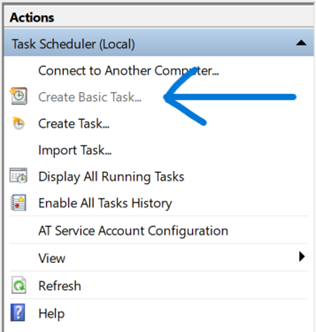

Introduction to MongoSafenet: Automating MongoDB Backups to AWS S3
In today's data-driven landscape, efficient data management is paramount for businesses and organizations of all sizes. MongoDB, a NoSQL database management system, has emerged as a popular choice for its scalability and flexibility in handling vast volumes of data. As organizations increasingly migrate their operations to the cloud for improved accessibility and scalability, there arises a pressing need for robust database backup solutions that seamlessly integrate with cloud platforms.
The MongoSafenet project represents a significant advancement in the realm of MongoDB database management. This innovative solution is meticulously designed to automate MongoDB backup processes and streamline data storage in the cloud. Specifically, MongoSafenet leverages the power of Amazon Web Services (AWS) S3 Buckets to offer a reliable and efficient cloud-based storage solution for MongoDB backups.
The core objective of MongoSafenet is to save valuable time and resources by simplifying the complex task of MongoDB backup while ensuring the security and accessibility of these backups through AWS infrastructure. This project seamlessly marries several cutting-edge technologies to provide a comprehensive and hassle-free MongoDB backup and cloud integration solution.
Key Technologies Utilized in MongoSafenet:
- MongoDB: At the heart of this project lies MongoDB, a robust NoSQL database management system known for its scalability, flexibility, and document-oriented data storage capabilities. MongoDB serves as the primary database engine for this solution.
- MongoDB Compass: MongoDB Compass is a sophisticated GUI (Graphical User Interface) tool designed to facilitate the management and visualization of MongoDB databases. It plays a pivotal role in configuring, monitoring, and interacting with the MongoDB database.
- Amazon Web Services (AWS): AWS, Amazon's comprehensive cloud computing platform, offers a vast array of services and resources. In the context of MongoSafenet, AWS provides the infrastructure needed to host and manage MongoDB backups seamlessly.
- Windows Task Scheduler: On the Windows platform, the Task Scheduler is a powerful utility that allows users to automate various tasks, including running scripts and executing programs at specified intervals. In MongoSafenet, it is harnessed to automate the MongoDB backup process, ensuring regular and reliable data backups.
- AWS Command Line Interface (CLI): AWS CLI is a command-line tool provided by Amazon Web Services, enabling users to interact with AWS services from the command line. Within the MongoSafenet project, the AWS CLI is employed to interact with AWS S3 for secure storage of MongoDB backups.
- AWS S3 Bucket: Amazon S3 (Simple Storage Service) is a highly scalable and durable object storage service provided by AWS. It serves as the cloud-based repository for MongoDB backups, ensuring data availability and durability.
- IAM User for Bucket Access: AWS Identity and Access Management (IAM) is used to create a dedicated IAM user with specific permissions, including "AmazonS3FullAccess," to securely access and manage the S3 bucket. This IAM user ensures that backups are stored, accessed, and maintained with the highest level of security.
- Amazon EC2 (Elastic Compute Cloud): Amazon EC2 is a cloud service that allows you to rent virtual servers, known as instances, to run your applications. EC2 offers scalability, high availability, and a wide range of use cases, including web hosting, data analysis, and machine learning.
The following sections of this guide will delve into the step-by-step instructions required to implement MongoSafenet effectively, from MongoDB installation to configuring the Task Scheduler and leveraging AWS resources for cloud-based MongoDB backups. By embracing this automation solution, organizations can not only safeguard their valuable MongoDB data but also enhance operational efficiency through seamless cloud integration.
TECHNIQUE 1:
For Windows 11/10 Using Task Scheduler
MongoDB Installation
Download MongoDB:
Step 1: Visit the MongoDB website at https://www.mongodb.com/.
Here, you'll find MongoDB versions tailored to different operating systems like Windows, macOS, and Linux.
Step 2: Select the appropriate version for your operating system by clicking on the respective download link.
Install MongoDB:
Step 1: Once the download is complete, locate the downloaded installer file (usually ending in .msi for Windows).
Step 2: Double-click the installer file to run it. The installation wizard will guide you through the process.
Step 3: You can typically choose the installation directory and configure options as needed during the installation.
Step 4: Follow the on-screen instructions to complete the installation.
Add MongoDB to PATH:
Note: To use MongoDB from the command line, you can add it to your system's PATH. PATH is a system environment variable that contains a list of directories. When you run a command in the command prompt or terminal, your system checks these directories for executable files.
Step 1: Find the directory where MongoDB was installed on your computer. This is typically under C:\Program Files\MongoDB on Windows or /usr/local/bin on macOS and Linux.
Step 2: Append this directory path to your system's PATH variable.
Step 3: On Windows, you can do this by opening the Start menu, searching for "Environment Variables," and clicking "Edit the system environment variables." Then, click the "Environment Variables" button, select "Path" in the "System variables" section, and click "Edit." Add the MongoDB directory to the list of paths.
MongoDB Compass Installation
This guide provides concise steps for installing MongoDB Compass.
Download MongoDB Compass:
Step 1: Visit the MongoDB website.
Step 2: Download the MongoDB Compass version that matches your operating system (Windows, macOS, or Linux).
Install MongoDB Compass:
Step 1: Locate the downloaded installer file (usually with a .msi extension for Windows).
Step 2: Run the installer by double-clicking it.
Step 3: Follow the installation wizard's prompts, customizing settings as needed.
Step 4: Complete the installation by following the on-screen instructions.
Additional Tools: MongoDB Command Line Tools Installation
This guide provides concise steps for installing MongoDB Command Line Database Tools, along with adding them to your system's PATH on Windows.
Installation Steps:
Step 1: Visit the official MongoDB website.
Step 2: Find the MongoDB Command Line Database Tools section. Click here/.
Step 3: Download the tools for your operating system.
Step 4: Run the downloaded installer.
Step 5: Follow the installation instructions provided.
Step 6: Note that some tools may require additional configuration after installation.
Adding MongoDB Command Line Database Tools to PATH (Windows):
Step 1: Locate the Tools. Find the directory where MongoDB Command Line Database Tools are installed, which contains executable files like mongodump and mongorestore.
Step 2: Open the Start menu and search for "Environment Variables."
Step 3: Click "Edit the system environment variables."
Step 4: In the System Properties window, click the "Environment Variables" button.
Step 5: Under "System Variables," find and select the "Path" variable, then click "Edit."
Step 6: Click "New" and add the path to the MongoDB Command Line Database Tools directory (e.g., C:\Program Files\MongoDB\Tools\bin).

Step 7: Click "OK" to save the changes.
MongoDB Compass Configuration & Troubleshooting
Step 1: Connecting to MongoDB:
After successfully installing MongoDB Compass, it's time to connect it to your MongoDB server.
Launch MongoDB Compass from your computer, either by clicking its icon in the applications menu or searching for it in the start menu.
Step 2: Connection:
MongoDB Compass will open with a connection dialog.
You'll need to enter the following information to connect:
- Host: The address of your MongoDB server.
- Port: The port number where MongoDB is running (the default is usually 27017).
- Authentication Credentials: This includes your username and password for accessing MongoDB.
Step 3: Connection Troubleshooting:
If you encounter any issues connecting to MongoDB, consider the following steps:
- Ensure that your MongoDB server is running. You can check by running mongod in the command prompt or terminal.
- Verify that the connection details, including the host and port, are correct.
- Now try again to connect to the database.
About the Backup Script
The backup script is a set of commands that automate the process of creating backups of your MongoDB database and securely uploading them to an AWS S3 bucket. This script ensures the safety of your data.
Create MongoDB Backup Schedule:
Step 1: Create a Dedicated Folder:
Start by creating a dedicated folder on your computer where you'll store your backup scripts. For example, create a folder named "C:\MongoDBBackups."
Step 2: Create a Backup Script File:
Inside the folder, create a new text file and give it a name like "backup_mongodb.bat" (For Windows).
Step 3: Edit the Script:
Open the "backup_mongodb.bat" file using a text editor (like Notepad).
Step 4: Copy and paste the provided script into the file. Link to the Script
Step 5: Replace the placeholders in the script with your actual MongoDB server details, such as the host, port, paths, and database name. Incase the Script is not working troubleshoot it with the help of chatgpt.
Step 6: Save the Script.
Configuring Task Scheduler: Schedule Backups
Step 1: Access Windows Task Scheduler
Access Windows Task Scheduler from your computer. You can find it in the Control Panel or by searching for "Task Scheduler" in the start menu.
Step 2: Create a New Task
Click "Create Basic Task" to start the task creation wizard in the Actions panel.
Step 3: Name and Describe the Task
Name the task and provide a description.
Step 4: Choose a Backup Schedule
Choose a schedule for your backups (e.g., daily, weekly).
Step 5: Select Action
Select "Start a Program" as the action to perform.
Step 6: Choose the Backup Script
Locate and select the "backup_mongodb.bat" script that you created earlier.
AWS Setup
Step 1: Visit the AWS Website
Navigate to the official AWS website: AWS Website.
Step 2: Create an AWS Account
Click the "Create an AWS Account" button.
Step 3: Account Registration
Follow the guided registration process, which includes providing personal and payment information. Upon completion, you will have successfully created your AWS account.
Step 4: Log in to AWS Console
After successfully creating your AWS account, log in to the AWS Management Console.
Step 5: Access S3 Service
In the AWS Management Console, locate and select the "S3" service.
Step 6: Create an S3 Bucket
Click the "Create Bucket" button.
Step 7: Bucket Creation
Follow the steps in the bucket creation wizard, ensuring to provide a unique and meaningful bucket name.
Step 8: Configure Bucket Settings
Configure any desired settings as needed during the setup process.
Create an IAM User with S3 Full Access
Step 1: In the AWS Management Console, find and select the "Identity and Access Management (IAM)" service.

Step 2: Within the IAM console, create a new IAM user, specifying the user's details. Choose "programmatic access" when prompted.
Step 3: Permissions Configuration
When configuring permissions for the user, grant them "S3 Full Access" permissions, ensuring they have the necessary privileges.
Step 4: Access Key Information
After successfully creating the IAM user, make note of the "Access Key ID" and "Secret Access Key" assigned to this user. These credentials must be kept secure, as they will be required for configuring the AWS Command Line Interface (CLI).

AWS Command Line Interface (CLI) Configuration
Installing AWS CLI on Windows
Step 1: Visit the official AWS CLI download page for Windows by navigating to AWS CLI for Windows.
Step 2: Choose the appropriate MSI installer based on your system's architecture (64-bit or 32-bit) and click the download link.
Step 3: Locate the downloaded MSI installer file, such as "awscli-x86_64.msi," and double-click it to initiate the installation process.
Step 4: The installer wizard will open. Click "Next" to proceed.
Step 5: Carefully read the AWS CLI License Agreement. If you agree to the terms, select the "I accept the terms in the License Agreement" checkbox and click "Next."
Step 6: Decide whether to use the default installation directory or specify a custom one. Click "Next" to continue.
Step 7: Determine the folder where AWS CLI shortcuts will be placed in the Start menu. Click "Next."
Step 8: You can opt to create desktop and Start menu shortcuts for the AWS CLI. Make your selections and click "Next."
Step 9: Review your chosen settings. If they are correct, click "Install" to initiate the installation process.
Step 10: The installer will copy the necessary files and install the AWS CLI on your Windows system.
Step 11: Once the installation is finished, click "Finish" to exit the installer.
Configuring AWS CLI on Windows
Step 1: Launch a Command Prompt window on your Windows computer by pressing `Win + R`, typing "cmd," and pressing Enter.
Step 2: In the Command Prompt, enter the following command:
aws configure
aws configureStep 3: You will be prompted to provide the following information:
- Access Key ID: Enter the AWS Access Key ID obtained during the IAM user setup.
- Secret Access Key: Input the AWS Secret Access Key corresponding to the Access Key ID.
Optionally, you may configure the following settings based on your preferences. These settings are optional and can be left blank:
- Default region: Specify your preferred AWS region (e.g., us-east-1).
- Preferred output format: Select your desired output format (e.g., Json).
Step 4: To verify the AWS CLI configuration, run the following command:
aws configure list
aws configure listThis command will display the configuration settings you entered.
Step 5: Confirm that the AWS CLI is correctly configured and able to communicate with AWS services by listing the contents of your S3 buckets:
aws s3 ls
aws s3 ls
If your S3 bucket names are listed, your AWS CLI configuration is successful.
Run the Scheduled Task
Make sure that the scheduled task you created in the "Schedule Backups with Task Scheduler" section runs as planned. This task will automatically execute your MongoDB backup script at the scheduled intervals.
For testing purposes and to ensure that your backup process is functioning correctly, you can follow these steps:
- Access the Task Scheduler Library on your Windows computer. You can do this by searching for "Task Scheduler" in the Start menu.
- Locate the task you created for MongoDB backups in the list of tasks.
- Select the task, and in the Actions Panel, click "Run." This will manually trigger the task to execute immediately.
- Monitor the task's progress and check whether the backup script successfully creates a backup and uploads it to your configured AWS S3 bucket.

Running the scheduled task manually allows you to verify that the backup process is functioning as expected and that your data is being securely backed up to AWS S3.
Remember to periodically review the task's execution logs to ensure the ongoing success of your automated MongoDB backups.
TECHNIQUE 2:
AMAZON EC2 (UBUNTU VERSION) USING CRON
AWS Setup: S3 & EC2
Create an AWS Account
Step 1: Visit the AWS Website - Navigate to the official AWS website: AWS Website.
Step 2: Click the "Create an AWS Account" button.
Step 3: Follow the guided registration process, which includes providing personal and payment information. Upon completion, you will have successfully created your AWS account.
Step 4: After successfully creating your AWS account, log in to the AWS Management Console.
Create Bucket using S3
Step 1: In the AWS Management Console, locate and select the "S3" service.
Step 2: Click the "Create Bucket" button.
Step 3: Follow the steps in the bucket creation wizard, ensuring to provide a unique and meaningful bucket name.
Step 4: Configure any desired settings as needed during the setup process.
Create an IAM User with S3 Full Access
Step 1: In the AWS Management Console, find and select the "Identity and Access Management (IAM)" service.
Step 2: Within the IAM console, create a new IAM user, specifying the user's details. Choose "programmatic access" when prompted.
Step 3: When configuring permissions for the user, grant them "S3 Full Access" permissions, ensuring they have the necessary privileges.
Step 4: After successfully creating the IAM user, make note of the "Access Key ID" and "Secret Access Key" assigned to this user. These credentials must be kept secure, as they will be required for configuring the AWS Command Line Interface (CLI).
Create an EC2 Instance
Step 1: Go to EC2 in services section.
Step 2: Click on Launch instance in the Launch instance section.
Step 3: Write the name of Instance.
Step 4: Choose the operating system as Ubuntu.
Step 5: Create a new key pair.
Step 6: Name the key pair and choose .pem as a file format and click on create key pair.
Step 7: Click on launch instance, then go to view all instance.
Step 8: After the instance state comes to running, choose your created instance and click on connect.
Step 9: Choose how you want to connect with the instance. Here we are using EC2 Instance Connect.
Configuring EC2 Instance
Step 1: Update and upgrade your system:
Use the following commands to ensure your system is up-to-date:
sudo apt update
sudo apt update
sudo apt upgrade
sudo apt upgradeStep 2: Add the MongoDB repository:
Add the MongoDB repository to your package sources list:
sudo add-apt-repository "deb http://archive.ubuntu.com/ubuntu focal main"
sudo add-apt-repository "deb http://archive.ubuntu.com/ubuntu focal main"Step 3: Add the MongoDB GPG key and update again:
Download and add the MongoDB GPG key to your system, then update your package list:
wget -qO - https://www.mongodb.org/static/pgp/server-5.0.asc | sudo apt-key add - echo "deb [arch=amd64, arm64] https://repo.mongodb.org/apt/ubuntu focal/mongodb-org/5.0 multiverse" | sudo tee /etc/apt/sources.list.d/mongodb-org-5.0.list
sudo apt update
sudo apt updateStep 4: Install MongoDB:
Install MongoDB using the following command:
sudo apt-get install -y mongodb-org
sudo apt-get install -y mongodb-orgStep 5: Start and enable MongoDB service:
Start and enable the MongoDB service with the following commands:
sudo systemctl start mongod
sudo systemctl start mongod
sudo systemctl enable mongod
sudo systemctl enable mongodStep 6: Install AWS CLI:
Install the AWS Command Line Interface (CLI) using this command:
sudo apt-get install -y awscli
sudo apt-get install -y awscliStep 7: Configure AWS CLI:
Configure the AWS CLI by running the following command:
aws configure
aws configureFollow the prompts to enter your AWS access key, secret key, default region, and output format.
Step 8: Create a backup script:
Navigate to the home directory and create a new script file:
cd /home/ubuntu
cd /home/ubuntu
nano backup_mongodb.sh
nano backup_mongodb.shCopy and paste the provided script into the editor.
Step 9: Make the script executable:
Make the script executable with the following command:
chmod +x backup_mongodb.sh
chmod +x backup_mongodb.shStep 10: Schedule backups using cron:
Edit the cron jobs using the following command:
crontab -e
crontab -eAdd the following line to schedule daily backups at 2 AM. You can use crontab.guru to create your own time.
0 2 * * * /home/ubuntu/backup_mongodb.sh
0 2 * * * /home/ubuntu/backup_mongodb.shSave and exit the editor.
Step 11: Test the backup script manually:
Test the backup script manually with this command:
./backup_mongodb.sh
./backup_mongodb.shStep 12: Go to S3 Bucket and check the created backup
Conclusion
In conclusion, this comprehensive guide has simplified the process of setting up and using MongoSafeNet for technical & non-technical users. It highlights the importance of regular backups for data security and recovery. By following these detailed steps, you can effectively manage your MongoDB databases and automate backups with confidence.
In the ever-evolving landscape of data management and cloud computing, the MongoSafenet project stands as a testament to innovation and efficiency. With a primary focus on automating MongoDB backups and seamlessly integrating with Amazon Web Services (AWS) S3, this project offers a comprehensive solution to address the challenges of data backup and cloud storage.
As we conclude our documentation guide on MongoSafenet, it is essential to reflect on the key takeaways and the significance of this project:
- Streamlined MongoDB Backup: MongoSafenet simplifies the process of MongoDB backup by automating it through the Windows Task Scheduler. This not only reduces the risk of data loss but also ensures that backups are executed consistently and reliably.
- AWS Integration: Leveraging the power of AWS S3, MongoSafenet provides a secure and scalable cloud storage solution for MongoDB backups. Organizations can now benefit from the durability, accessibility, and cost-effectiveness of AWS cloud storage.
- Security: The project emphasizes security by creating a dedicated IAM user with precise permissions, ensuring that only authorized entities can access and manage the AWS S3 bucket. Data integrity and confidentiality are paramount.
- Operational Efficiency: By automating MongoDB backup and cloud storage, MongoSafenet enables organizations to save valuable time and resources. IT teams can focus on higher-value tasks while having confidence in their data backup strategy.
- Technology Stack: MongoSafenet harnesses a powerful technology stack, including MongoDB, MongoDB Compass, Windows Task Scheduler, AWS CLI, AWS S3, and IAM, to create a seamless and robust solution.
- Scalability and Future-Proofing: As organizations grow, their data management needs evolve. The cloud-based approach of MongoSafenet ensures scalability, adaptability, and readiness for future data challenges.
- Data Resilience: MongoDB backups stored in AWS S3 benefit from the inherent data resilience of Amazon's infrastructure. In the event of data loss or system failures, backups remain accessible and recoverable.
MongoSafenet represents a forward-thinking solution that empowers organizations to harness the full potential of MongoDB while ensuring the security and accessibility of their data through AWS S3. By automating backups and embracing cloud storage, organizations can mitigate risks, optimize operations, and confidently navigate the complexities of modern data management.
As you embark on your journey to implement MongoSafenet, this documentation guide serves as a comprehensive resource to guide you through the installation, configuration, and deployment process. We hope that MongoSafenet becomes a valuable addition to your data management toolkit, safeguarding your MongoDB data and enabling your organization to thrive in a data-driven world.